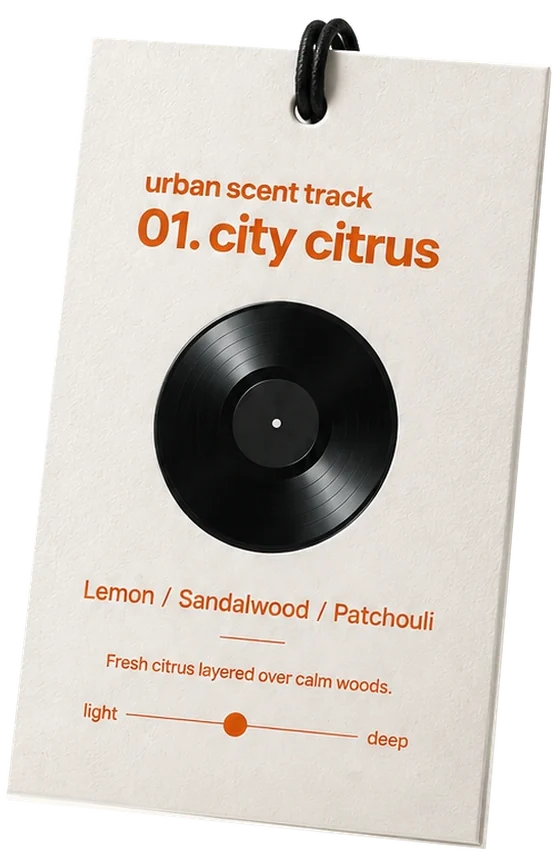

Track 01 — Bright & rhythmic
City Citrus
Fresh citrus layered over calm woods.
도시의 아침을 깨우는 향.
레몬과 버베나의 산뜻함 뒤로 샌달우드와 베티버의 차분한 우디 향이 이어집니다. 상큼하지만 가볍기만 하지 않은 향을 좋아하는 분께 잘 맞습니다.
▶어울리는 음악 — 밝고 경쾌한 플레이리스트
Scent notes +
- Top
- Lemon · Verbena · Basil
- Heart
- Black Pepper · Sandalwood · Jasmine
- Base
- Patchouli · Clove · Vetiver